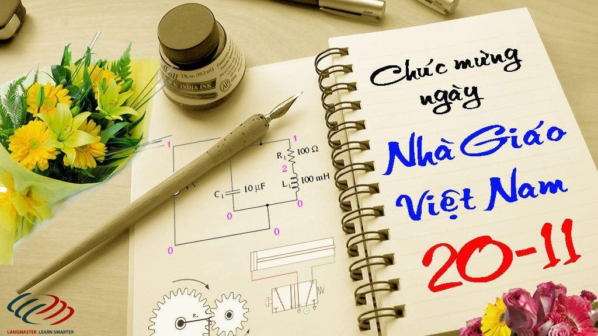
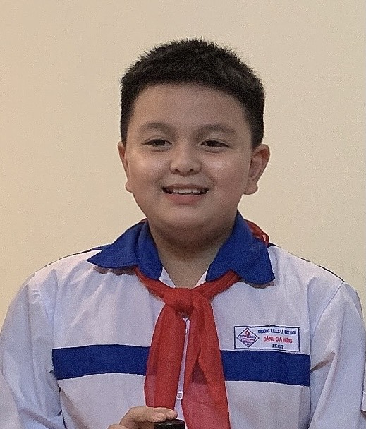
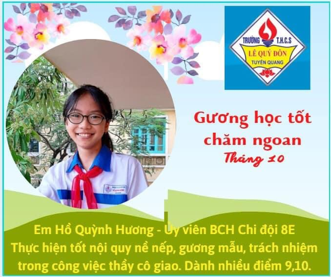

người lái đò
Vâng, có mấy ai “qua sông mà không lụy đò” Thầy cô là người lái đò, đưa chúng em đến một tương lai tươi sáng, công lao to lớn ấy có mấy ai đền đáp được. Nhưng với thầy cô niềm hạnh phúc nhất là đưa được con đò của mình cập bến, để cập bến được, thầy cô
phải đổ biết bao nhiêu công sức, mồ hôi,sự hy sinh thầm lặng của mình để chèo lái con đò với niềm tin và hy vọng, sẽ đưa chúng em đến bến bờ của sự thành công.Thầy cô kính yêu Ngày 20-11 đã đến, chúng em không biết làm gì để đền đáp
công ơn như trời biển của thầy cô, chúng em chỉ biết kính dâng lên quý thầy cô những bông hoa tươi thắm và lòng biết ơn sâu sắc nhất trong trái tim chúng em. Chúng em sẽ ra sức thi đua học thật tốt để không phụ lòng thầy cô. Cuối cùng
em không gì hơn xin chúc quý thầy cô sức khỏe và hạnh phúc để dìu dắc chúng em và thế hệ mai sau trở thành con ngoan, trò giỏi là người có ích cho xã hội.



cô giáo tôi
“NGƯỜI MẸ THỨ HAI”
“Lúc ở nhà mẹ cũng là cô giáo
Lúc đến trường cô giáo như mẹ hiền”

Tôi đã có những người mẹ hiền như vậy trong cuộc đời và tôi chắc chắn các bạn cũng sẽ có những người mẹ hiền như tôi ở “ Ngôi nhà thứ hai của mình”. Người mẹ hiền mà tôi hằng yêu quý, kính trọng và cả tấm lòng biết ơn nữa. Đó chính là cô Thương
– Cô giáo chủ nhiệm của lớp tôi. Không chỉ riêng tôi mà tất cả các bạn trong lớp cũng rất yêu quý cô và cô cũng đáp lại sự trân quý của chúng tôi. Cô có dáng vóc vừa tầm, đầy đặn, khuôn mặt thật tươi tắn, phúc hậu, hiền hòa, dễ
gần. Tôi thích nhất là mỗi lần cô giáo cười , khuôn mặt cô tôi hửng sáng lên, hàm răng trắng đều, đôi môi hồng như thoa son, ánh mắt trong trẻo, … cô đẹp lắm, có lẽ vì tình yêu thương của tôi dành cho cô, nên lúc nào tôi cũng
thấy cô tôi đẹp nhất.Tuy thế, cô tôi nghiêm lắm đấy chẳng phải là ở lớp có mấy trường hợp nghịch ngợm tưởng cô không bao quát hết nên có đôi lúc chểnh mảng học hành, khi cô nghiêm sắc mặt, thì các bạn ấy lại sợ hãi.Cô tôi thật
sự là “ người mẹ thứ hai” của chúng tôi. Ngoài những kiến thức bài giảng trên lớp, cái gì cô tôi cũng biết, đặc biệt là cô còn lí giải, giảng giải những điều mà chúng tôi chỉ nghĩ và chỉ nghĩ mà thôi.Thế mà cô cũng biết, cô đoán
được những suy nghĩ của chúng tôi, có đôi lúc, tôi thấy cô thật gần gũi, có những lúc tôi cũng như các bạn rất khó nói chuyện với người khác, kể cả mẹ mình, nhưng tôi lại dễ dàng kể cho cô nghe, với giọng tâm tình, thủ thỉ,
cô hưỡng dẫn, giảng giải thậm chí kể những câu chuyện vui để từ đó mọi vướng mắc, ấm ức trong tôi được giải tỏa một cách nhẹ nhàng.Nói về cô giáo mà lại không kể vai trò của cô, tài năng của cô khi truyền thụ kiến thức thì
quả là thiếu sót lớn. Cô giáo của tôi là một giáo viên tuyệt vời, cô dạy môn Tiếng Anh, chương trình Tiếng Anh lớp 6 năm học 2021 – 2022, thay đổi sách giáo khoa trên cả nước, toàn những bài mới, kiến thức mới khó và xa lạ đối
với chúng tôi khi vừa bỡ ngỡ chuyển cấp. Tôi thật chật vật, có những bài học khó khi hết giờ học tôi vẫn còn mông lung chưa rõ, cô ân cần giảng giải đến khi nào tôi được thông suốt. Nhờ cô, ngoài những kiến thức giáo dục, chuyên
môn, cô dạy cho chúng tôi kĩ năng sống, kĩ năng giao tiếp để khi ra ngoài xã hội chúng tôi gặp những tình huống đó không còn bỡ ngỡ và bất ngờ, xử lý linh hoạt. Cảm ơn cô thật nhiều một “người mẹ” đúng nghĩa của tôi ở trường. Tôi
muốn cảm ơn cô nhiều lắm bởi cô không chỉ bớt thời gian để nghe tôi và các bạn nói, cô còn quan sát chúng tôi để điều chỉnh hành vi cũng như lời nói của chúng tôi kịp thời.Tôi vẫn thường hay nghe mẹ nói với cô : “ ở độ tuổi
này: “người lớn không ra người lớn, trẻ con không ra trẻ con , ương ương dở dở, đến kì khó dạy”. Thế mà cô giáo thân yêu của tôi không chỉ quản lí, hưỡng dẫn, dạy bảo 41 “ tiểu quỷ”. Và Chỉ nghe tới đó thôi mới biết thương cô
đến nhường nào.Cô giáo yêu quý của em, sau này lớn lên em có thể gặp nhiều thầy cô nữa nhưng mãi mãi em không thể nào quên cô, quên “ người mẹ” đáng kính thứ hai của mình. Em hữa với cô, em sẽ cố gắng để trở thành một học sinh
ngoan, một công dân tốt xứng đáng với sự dạy dỗ và yêu thương của cô. Học sinh: Đặng Gia Hưng